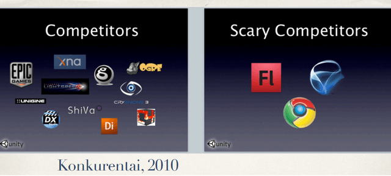

The Evolution of Game Development: A Brief History#
The history of video games is not always well known and continues to be explored.
Game development is a business, which means it is:
📍 a history of brands rather than individual developers[1] or players — that is, a record of commercial successes and failures.
📍 a history of the American market (which doesn’t necessarily mean American developers — a company could be based anywhere, but for a game to be noticed, it had to launch in the U.S. and be accepted there)
Since the earliest days of computer games in the late 1940s, there have been two distinct directions that can loosely be described as the “arcade” and the “computer” schools.
The arcade school is a type of game design broadly defined by skill and action. These games were often real-time, emerged as TV-connected consoles or coin-operated machines, and were primarily focused on entertaining players.
The computer school tended to be more turn-based[2]. It originated from scientists demonstrating that computers could handle increasingly complex tasks — games were often created as experiments or proofs of concept.
These two traditions developed largely independently at first. But over time, they began to converge, and by the 1990s, they had merged into a unified field. The late 1990s also marked the moment when gamer subculture began to merge with mainstream culture.
Most books on video game history focus on isolated fragments or iconic titles—but it’s more interesting to try outlining broader periods, roughly as follows:
⚗ 1947–1972 — The Pre-Industry Era
🕹 1972–1983 — The Atari Era
🎮 1983–1989 — The Nintendo Era
📺 1989–1995 — The Console Wars Era
📀 1995–2006 — The PC and Next-Gen Console Era (Microsoft Era)
📱 2006–202x — The Post-Revolution Industry, shaped by two major shifts: the indie revolution and the casual revolution
Each period solves a major problem for the industry — only to gradually accumulate new ones, which are then addressed by the next stage.
Events that mark the transition from one era to the next:
📍 1947 — The first patents for game-related technologies appear. Games already exist, but there’s no real industry yet — no money involved.
📍 1962 — Spacewar! becomes the first widely played digital game, spreading across U.S. universities. It originates in the MIT model railroad club—a community of technical hobbyists.
📍 1972 — The first commercially successful game appears. Atari solves the “monetization problem”—money starts flowing in, corporations emerge. But this also creates a new tension between developers and publishers. The industry is born.
📍 1983 — The U.S. game industry crashes. Nintendo rewrites the rules to protect the market from another collapse. It safeguards developers—but also creates a monopoly, making them dependent on the platform holder. Licensing becomes the new gatekeeper.
📍 1989 — Sega Genesis launches in the U.S. The global game market becomes more polycentric. Console exclusivity enters the picture.
📍 1995 — Sony releases the PlayStation. Microsoft expands into PC gaming and later launches the Xbox. Development costs rise. Publishers gain more power. A shift in scale occurs—this marks a rough transition from the classic to the modern era of game development.
📍 2006 — Two major revolutions: the indie revolution, powered by digital storefronts and democratized engines; and the casual/social revolution, enabled by mobile platforms and social networks. The result: more new developers and more new players than ever before.
Dominant game platforms by decade
📍 1970s – Arcades
📍 1980s – Consoles
📍 1990s – Computers
📍 2000s – Online
📍 2010s – Mobile
📍 2020s – ? Possibly VR/XR
Several notes:
- These dates reflect when a platform began to dominate and shape game design across the industry, not simply when it first appeared.
- There is no hard replacement — new platforms and design directions don’t kill the old ones; they simply add new layers to the ecosystem.
- Arcades weren’t a genre — they were a place. You went there to play. That context defined their design: short play sessions, high intensity, and instant feedback. Other platforms also implicitly define where the game is played.
- Early games on new platforms are usually ports from previous ones: early console games were often arcade ports, casual games started as adaptations of PC titles. New genres and native design styles typically emerge later, as designers explore the unique possibilities of each platform.
Source materialTristan Donovan – Replay: The History of Video GamesSteven Levy – Hackers: Heroes of the Computer RevolutionBlake J. Harris – Console Wars: Sega, Nintendo, and the Battle That Defined a GenerationDavid Kushner – Masters of Doom: How Two Guys Created an Empire and Transformed Pop Culture
The CRPG Book: A Guide to Computer Role-Playing Games - a history of the genre across all eras
The Set Piece Period - game design characteristics across different eras
История видеоигр: вводная лекция - author of this periodization
How a Game Studio Works#
There are only three key questions:
- Where does the funding come from?
- How are games made?
- How do games generate revenue?
Where does the funding come from?
In Game Studio Leadership: You Can Do It, Jesse Schell outlines four common funding models:
💵 Self-Funding. Invest your own money into the first game, use the profits to fund the second, and repeat. If you’re wealthy enough to bootstrap development, this is often the best option — maximum freedom, minimum interference.
🤝 Work-for-Hire. The team develops a game under contract for another company. This can be combined with other strategies — for example, making a client game to fund your own passion project.
📜 Publisher. A publisher provides funding, usually after seeing a working prototype (which you’ll likely need to finance yourself). Revenue splits depend on your contract. You’re in for a wrestling match with the publisher to decide who gets how much.
📈 Investor. In this case, you’re giving up a portion of studio ownership, not just revenue. The struggle isn’t over profit-sharing, but over control — how much of the company belongs to whom. Investors often come from outside the games industry, and may not see a game — they see a potential money machine.
Just like in the film industry, studios (or publishers) initially owned the physical spaces, but later shifted toward investing in production itself, hiring teams of actors and directors instead.
None of the four funding models truly dominates. A studio might start by making small games and self-publishing (well, “self” — the platform holder still acts as publisher). Later, they may sign with a traditional publisher, and eventually become publishers themselves. Eventually, even those publishers may seek investors. Meanwhile, platform holders and publishers often try to acquire their own development teams to gain more control. Publishers grow into massive entities. And developers keep searching for new ways to make games without money.
The “wrestling match” with a publisher often comes down to creative accounting. Publishers inflate their reported expenses to avoid sharing revenue with developers — claiming massive marketing, distribution, or support costs. In response, developers inflate their production costs to justify receiving more funding upfront or a larger revenue share. Meanwhile, the platform holder also gets in on the act—claiming operational and infrastructure expenses to justify taking 30% of every sale.
How are games made?
⚒ "You just make it.". This is the earliest stage of development. A programmer, or a game designer[3] plays with the game like a lump of clay, shaping and reshaping it until something interesting begins to emerge.
📐 The Waterfall Model. The waterfall model became common in game development industry in the mid-1990s to early 2000s. As games grew more complex, early informal approaches were no longer enough. Teams began adopting established software development methods. First, you research the market. Then, you create a detailed design. Once that plan is approved, you build the game accordingly, test it, and release it. The names of the stages were influenced by the film industry:
- Pre-production – writing a detailed game design document
- Production – actually building the game
- Post-production – bug fixing and support
🔁 Agile Development. This transition began in the late 2000s. Building a game for several years based on a fixed, detailed plan turned out to be less than ideal. Developers began exploring methods that allowed for early feedback from the target audience. Iteration speed became a critical factor — both during development and after launch, as live ops and ongoing updates became the norm.
Elements of Lean, Agile, and Scrum started making their way into game development. Studios began experimenting with player data collection at every stage. Rovio, for example, was one of the first to find massive success with this approach. New practices related to lean development began to emerge: early access, soft launches, greenlight, crowdfunding and other ways of involving the player community during development.
How do games generate revenue?
🛒 Retail
⬇ Direct download
🆓 Free to play
“Free-to-play” — this is what players know, and “love” — so it usually needs no elaborate explanation. The key metric here is Average LTV (Lifetime Value) — how much, on average, a player spends before they leave the game. The emphasis is on “average”. You can spend money to acquire a large number of players who never pay anything — as long as the small group of paying players covers the total costs.
Those who do pay — aside from “giving money to greedy devs” — are also funding the ability for everyone else to play for free. They cover the developer’s expenses for live ops, server maintenance, and new player acquisition. With a large fanbase, this model can work surprisingly well.
Source materialJesse Schell - The Art of Game Design: A Book of LensesLovell Nicholas - The Pyramid of Game Design_ Designing, Producing and Launching Service Games
Game Studio Leadership: You Can Do It
Game engine design#
The concept of the engine as a standalone product became established around the era of The PC and Next-Gen Console. There were both high-end engines on the market — like Quake and Unreal Engine, priced in the hundreds of thousands of dollars—and smaller ones available for tens of thousands.
Сколько стоит полноценный движок? - prices in 2004
How 1999 Quake 3 Teaches Elite Software Engineering — Quake Engine Overview. It implemented key architectural concepts such as message queue–based handling for network code and a virtual machine for scripting and isolating user-generated code (e.g., for mods and extensions).
Many companies built their own engines because licensing existing ones was expensive, and off-the-shelf solutions didn’t always fit the genre or technical requirements of the game. In some cases, an engine also had to match the studio’s workflow—for example, how accessible it was for level designers or artists with limited programming knowledge.
Sometimes, quality was also influenced by the fact that it was the game, not the engine, that brought in revenue. As a result, the needs of the game always came first.
If a game could be profitable with just a few programmers writing straightforward application code — and with “good enough” visuals or architecture — then that’s exactly what the team would build.
This mindset was especially visible in:
- the early days of the App Store
- the hyper-casual boom
- early Windows shareware
- the rise of home PCs in general
- indie solodev[4]
Only later — if the game turns out to be successful — does the team start thinking about improving the underlying technology. At that point, whether for ongoing support or for starting a new project, they begin identifying common components and working to make them more modular, configurable, and extensible.
Another factor that influences engine design is the maturity of technology on the target platform. When a new platform emerges, the available tools are usually limited — as are the hardware capabilities. Since games are almost always designed to push the hardware to its limits, architectural decisions are often shaped by that goal.
(When a new technology emerges, it is initially less capable than the well-developed technologies of the previous generation.)
An Anatomy of Despair: Introduction — (2008) the period When the “Low-Level Faction” and the “Abstraction Faction” Reached Parity: this refers to the moment when hardware became powerful enough to handle engines built with higher-level abstractions, and the accompanying toolsets and development methodologies matured to the point where abstraction no longer significantly hindered production.
Pitfalls of Object Oriented Programming — (2009) some ideas behind Data-Oriented Design emerged because consoles didn’t just perform poorly — they performed very poorly — due to cache misses caused by virtual function calls. This also explains why game development often favors custom libraries over standard ones, and why the adoption of new language versions tends to be slow — console toolchains often had poor or suboptimal support for modern language features.
Engine design is also closely tied to how its creators envision the division of responsibilities between programmers, game designers, and artists.
For example, engines like those from id Software, Naughty Dog, or the Dagor Engine by Gaijin are more programmer-oriented — favoring text-based scripting languages and direct code control. In contrast, engines like Unreal (with its Blueprints system) and Unity (with code annotations for editor parsing and visual data presentation) are designed to empower non-programmers—enabling designers and artists to work more independently without needing to dive into source code.
The GDC 2003 Game Object Structure Roundtable — In the “Data-Driven Design” section: this is where the distinction is discussed between the “everything is scripted” approach versus the “components for configuration” approach.
So, the evolution of game engines and the practices they use aren’t just driven by some “absolute” architectural qualities — they are primarily shaped by external conditions.
One more important point: to successfully sell a game engine, you need a dedicated sales and business team — people who not only promote the engine, but also shape the long-term revenue strategy around it. For example, Unity doesn’t just make money from its freemium licensing model—it also earns through Unity Ads, as well as Unity Gaming Services (UGS) and the Asset Store.

Random Stories About Unity. Unity’s competitors in 2010 — try to guess all the logos. Some products, like Unreal, are still widely recognized today—but others, once seen as major and serious contenders, have since disappeared (XNA, RenderWare).
To sum up, engine design is shaped by:
📍 the needs of the games, genres, and platforms it’s built for
📍 the hardware constraints of the target platform
📍 the composition of the teams that will be using it
📍 the planned monetization strategy behind it
Journey from Object-Oriented Design to Data-Driven Design#
I’d like to give an example of a common pattern in engine evolution that occurs in response to following factors:
- One or more successful games are quickly developed on the engine, which creates the desire to start improving it.
- Some of the asset and gameplay configuration work is gradually handed off to non-programmers for convenience, faster iteration, and better overall quality (and also because programmer time is more expensive)
I’ve seen this pattern unfold in several companies over the course of my career (since 2005, during the Post-Revolution Industry era), heard similar stories from colleagues, and come across descriptions of the same kind of engine evolution during the PC and Next-Gen Console Era (link).
Judging by various conference talks and documentation, Unreal Engine appears to have gone through a very similar evolution as well.
An engine undergoing this kind of evolution typically goes through several distinct phases.
🛠 Phase 1 - Spagetti
⚙ Phase 2 - Modularization
📜 Phase 3 - Data-Driven
🤖 Phase 4 - Genre-Specific Game Builder
🛰 Phase 5 - General-Purpose Game Builder
🛠 Phase 1
There’s code for one or more games, built in YOLO style. Everything is class-based. There’s a God Object — usually called GameObject, and perhaps a GameLevel that knows everything about everyone and gets passed around everywhere. In this setup, everything in the game is connected to everything else.
Here’s an example of what the code for a typical in-game object might look like:
class GoblinLeader : Goblin {
// parameter tuning
// definition of unique behavior
}
// the class hierarchy might look something like this:
// GoblinLeader -> Goblin -> Enemy -> AiObject -> MoveableObject -> GameObject
// or, to avoid the diamond problem, interfaces are introduced instead
class GoblinLeader : GameObject, IEnemy, IMoveable, IBoss {
// same as above
}The programmer knows everything about the Goblin Leader:
Who it is – nouns, baked into the inheritance hierarchy
What it’s like – parameter values
What it does – verbs, behavior written directly in code
CThingy->CFlingy->CDoodad->CUnit from Starcraft
⚙ Phase 2
At some point, someone — usually the architect — says, “We can’t keep doing it this way.” And starts thinking about how to reduce coupling. That’s when cleanup begins. Modules and systems are introduced. Classes become more structured. There’s more runtime flexibility, with patterns like: “Does this object have something of this name and type?”
The GameObject starts to slim down, while the codebase fills up with managers, data descriptions, and smart pointers—because it becomes impossible to tell where a full entity ends and its parts begin. As a result, coupling drops sharply, but at a cost: you get a flood of type casting, manual pattern matching, sub-object lookups. Frameworks, layers, and messaging/signal systems are all common architectural patterns that characterize this phase.
There are always a few systems that cut across every part of the game and remain architecturally tangled[5]
class GoblinLeader : GameObject {
// creation of components: EnemyComponent, MoveableComponent, BossComponent
// (either dynamically or statically -- e.g., via template parameters)
// + configuration, possibly loaded from a file
}
class GameObject { TArray<Component> components; ... }Compared to the first example, the programmer loses some knowledge in this setup:
- It’s a bit harder to tell “who” the object is. Components may be added dynamically based on config files, though you can still trace it by reading the config-loading code.
- It’s still fairly easy to understand “what it does” — at most, a game designer might disable a component (e.g. turning off BossComponent could change how the enemy chases the player).
- But “what it’s like” becomes unclear. Now it’s the game designer who decides whether the boss has 100 or 500 HP, what color clothes they wear, or what abilities they have.[6]
📜 Phase 3
// There’s no GoblinLeader class anymore — it’s created from an external file
GamePtr<GameObject> goblinLeader = CreateGameObject("GoblinLeader");
...
// File with class definitions
"GoblinLeader": {
"EnemyComponent": {...},
"MoveableComponent": {...},
"BossComponent": {...}
}
// ^-- Not just constants, but the entire class assembly process has now moved into the config file📍 The programmer no longer knows “who” they’re looking at. There’s no GoblinLeader class in the code anymore — just a collection of parts. For the rendering system, the Goblin Leader is no different from a rock (as long as both have meshes added by the game designer). For the AI system, it is different. The awareness of specific objects has shifted: now it’s the game designer who knows what the object is—while the programmer might not know at all.
📍 The game designer can now fix logic issues without a programmer, and often faster than one. If fixing still requires a programmer, it usually means the debugging or visualization tools are incomplete.
📍 The programmer only understands what individual components do. Meanwhile, the game designer can combine them in ways the programmer never intended.
A clear sign you’ve reached this phase is when a programmer knows all the components in the system — but sees something in the game and genuinely wonders how the designers even built it.
As for “what” an object is, it’s no longer just numbers — it’s often defined with visual editors. For example: a visual curve editor that shows how a variable changes over time — like a goblin’s acceleration and deceleration curve. Ideally, there’s no need to “look under the hood” anymore.
At this phase, a key shift occurs: the programmer no longer knows "who" an object is — because “game object type” ≠ C++ class anymore`.
If there’s no GoblinLeader class, then what is the object from the C++ side? At its most primitive, it might just be a map of key-value pairs, something like engine::map<engine::string, engine::anyWrapper>
And that’s not far off from how the object might look in a Lua-like scripting environment from the engine’s C++ perspective.
This marks the end of object-oriented design and the beginning of data-oriented design.
To evolve this representation further, you have to stop thinking in terms of objects, and start thinking in terms of data.
📍 What language should be used to describe them? How should this description be connected to the C++ representation (embed tags directly into C++ vs. use a separate description language?)
📍 How should metadata be stored—metadata that’s needed by tools but not by the game itself?
📍 How should deserialization from various formats be handled in-game?
📍 How should data integrity, versioning, and migration be handled as the relationships between data evolve over time?
Previously, the key design question was:
“How do we represent data using C++ classes?” (i.e., what’s convenient for programmers).
Now, the question becomes:
“How do we represent data in a way that’s convenient for everyone” — for game designers and programmers alike.
Several languages can coexist in the engine.
auto* window = createWindowFromJsonWithAllSubcomponentsAndLogic();
Why do I have to write code like this:
main_window
find_control "ok_button"
cast_to_button
find_control "button_text"
cast_to_text
set_text "Ok"
But I don’t actually write it? How is that possible?
Oh right, it’s generated for me — automatically.
Well, not *for me* exactly...
I don’t even know the language half the application is written in...
And seriously -- why the hell did the description of my simple window end up as a bunch of XML?
Who's this guy next to me that we're paying, and he's just writing some coordinates into XML?
Oh, and who's that? An ui/ux artist?
It's simple:
The OOP model of *my* application
has been *replaced* by the metamodel of the *window system*,
which was *configured* to implement my application.At this stage, companies tend to undergo organizational changes — they split into departments, everything becomes heavily process-driven, and there’s a rise in meetings, specializations, and task status tracking. It becomes difficult to just fix some code without sprint planning and a bunch of reviews. Gray areas start to emerge, where programmers don’t fully understand what game designers, artists, etc., are writing — and vice versa, content can be created without a clear understanding of how it works under the hood. This can hurt productivity or lead to tasks that no one wants to touch because everyone assumes they fall under someone else’s responsibility.
In terms of design patterns — this phase often brings the emergence of out-of-language meta-descriptions of game objects, and extensive use of strategy factories. Scripting in one form or another becomes common. Most logic is moved out of the engine code. What remains in the engine is just the structure that interprets or supports the meta-description.

The trigger editor in Warcraft 3 is an example of configuring game logic through a visual interface
🤖 Phase 4
ScriptEngine::ExecuteScript("GoblinLeader");
// "GoblinLeader" — the file that describes the GoblinLeader entity,
// including its parameters and behavior logic.At the previous stage, the programmer only knows how the parts work — their job is to create them and hand them over to the game designers.
The final step — “let’s give game designers the ability to create those parts themselves, without involving programmers”.
The programmer is now aware only of the existence of certain “parts” — and that game designers can not only configure them but also create their own.
The same shift happens with what the parts do. You can’t build fully functional parts by just combining pre-made ones — behavior needs to be described too. Programmers may deliberately hide implementation details that are irrelevant to designers (after all, game logic rarely needs to deal with memory allocation and deallocation), but the more control over behavior they give to designers, the better.
At this stage, the organization goes through another shift—now even game designers and technical artists are seen as programmers, just lower-skilled ones.
- Prototyping Based Design: A Better, Faster Way to Design Your Game — Lee Perry, game designer on Gears of War, talks about how the prototyping process evolved with Unreal Engine 3 (using Kismet scripting, which effectively turned it into a “shooter construction kit”). This approach aligns closely with Phase 4 of engine evolution.
The question of what is exposed to game designers and what remains in the domain of programmers is decided by the system designer — based on the team’s makeup and the game’s genre (“system-level language” vs. “game logic language”).
Typically, programmers want scripts — because they want to program. Ideally, those scripts should do everything C++ can do, plus the things C++ can’t do easily. Meanwhile, game designers want windows, sliders, and visual scripting.
There are only three ways to make a product cheaper: fewer people, lower salaries, or shorter timelines.
And there’s only one way to make a game more interesting: give the ability to “tweak the sliders” to the people who actually understand what makes it fun. And typically, those people are not programmers.
But programmers often create the wrong kind of scripting systems. They design them for programmers — and as a result, only programmers can use them.
Offloading all game logic to the outside — the loop is fully closed. The engine becomes a virtual machine. All processes are finally locked in place. Most technical challenges of the third phase now turn into questions of content optimization. At this stage, a new turn of the spiral begins. If the externalized model suffers from the same rigidity as C++, the whole cycle is bound to start over again.
🛰 Phase 5
The engine in Phase 4 can be described as a “game constructor for a specific genre.” It’s a relatively stable phase — and an engine can remain in it for a long time.[7]
This stage has a major advantage: the development process becomes relatively predictable — in terms of timelines, team structure, and staffing needs at different stages. That kind of predictability is something business owners tend to really appreciate.
Sometimes, however, there’s an urge to take the engine one step further — toward becoming a generic game constructor.
The conditions that spark this shift can vary:
📍 You’ve built solid technology, and the architecture is flexible enough to consider peeling off the genre-specific layer.
For example: a multiplayer shooter evolving into a session-based shooter framework.
📍 A new and growing market emerges. For instance, AAA shooters may not fit mobile platforms — but session-based games are highly cross-platform-friendly. Or on a broader scale — a potential metaverse, with entirely different design priorities (like Epic’s Verse, which emphasizes verifiability and reliability over designer convenience).
📍 You’ve simply accumulated enough resources — and want to give it a try.
With genre-specific game constructors, the team composition was relatively predictable — you knew what kinds of specialists were needed for that genre. The engine’s tools could be designed to match the production pipeline of those specialists.
But if the engine supports any genre, the required team composition becomes unknown. You can’t design tools for a pipeline that doesn’t yet exist. What you need instead is a meta-language — a foundational language from which you can build other domain-specific languages for different types of specialists. In a simpler case, by extending the engine through direct modification of its source code.
One way to create such a meta-language is to gradually push lower and lower layers of the engine into the scripting domain, and describe the higher layers using that scripting language itself — relying on its idioms and techniques. From the outside, this can eventually give the impression that the entire engine is written in the scripting language. (Think: “Unity is written in C#.”)
To execute commands, a virtual machine capable of running bytecode is required. A full overview of how this process can be designed would be enough to fill an article of its own.
Possible methods for generating bytecode include: compilation from a scripting language (textual or visual), runtime interpretation of commands, loading a serialized representation from a binary file, or generating instructions programmatically via the virtual machine’s API.
Another — not strictly required but almost essential — feature of general-purpose engines is the creation of infrastructure around the engine itself. This can include: an asset store, a game showcase (possibly accessible directly from within the engine), and a community platform where developers can connect, share knowledge, and collaborate.
Treasure Hunting Systems Found in the History of Video Games — a vague term for a well-rounded environment surrounding a game engine
Other Evolutionary Paths of Game Engines#
I’ve described one of the evolutionary paths of game engines — one that I’ve seen many times (but I don’t even know how common this path really is across the industry). But it’s not the only path.
Not all engines followed this pattern — Unity and Flash (as a game engine) weren’t built for specific games, for instance. BigWorld (used in World of Tanks) also demonstrates a different path — starting as a general-purpose engine intended for multiple games, and later becoming part of Wargaming after the company acquired the engine’s developers.
I also don’t know enough about the internal, proprietary engines used by large corporations and how they evolved over time — but it would be interesting to explore those as well.
Footnotes
- 1.With rare exceptions such as John Carmack or Hideo Kojima. ↩
- 2.The division between turn-based and real-time games is, of course, a rough simplification, but it helps illustrate the general design direction of each tradition. This split was also shaped by hardware constraints: specialized gaming devices could often outperform general-purpose computers when it came to running games. ↩
- 3.Or sometimes both in one person ↩
- 4.Some links about the idea "Write games, not engines": 1 2 3 4 ↩
- 5.Somehow, tutorials and GUI are always among them. ↩
- 6.Part 4: The Set Piece Period - a note on Set Piece Game Design -- a direction in game design that began to take shape in the early 2000s. In some games, much of the game designer's role shifted toward parameter tuning. Unlike the earlier philosophy of "great games are built on verbs" (as described in New Game Design by Satoshi Tajiri, creator of Pokémon), this approach moved the focus toward adjectives: the designer configures the game by deciding what kind and how many enemies the player will encounter. ↩
- 7.Dozens of games — and in particularly successful cases, even hundreds. ↩